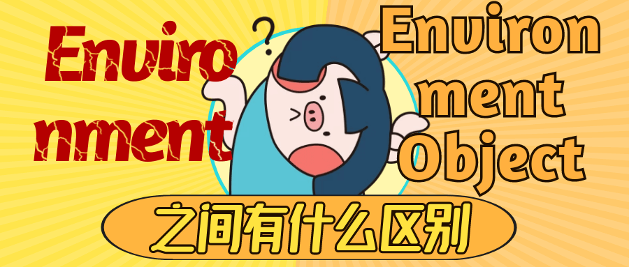

environment和environmentObject的区别及适用场景
SwiftUI中传递环境变量时会发现两个相似的方法：environment<V>(_ keyPath:, _ value:)和environmentObject<T>(_ object:)，这篇文章我们来看一下这两个方法的不同之处和分别的适用场景。

到公众号【iOS开发栈】学习更多SwiftUI、iOS开发相关内容。回复“博客”免费获取各大互联网公司面试题。
首先要明确的一点是，这两个方法都是用来设置环境变量的，而环境变量会影响到被设置变量的视图以及它的所有子视图，并且这个传递过程不需要明确指出。
也就是说，假设有三个视图，view1、view2、view3，其中view2和view3是view1的子视图，要想在view2和view3中使用view1设置的环境变量的话，只需要直接在view中使用@EnvironmentObject或者@Environment而不需要在创建view2和view3的时候显式传参。
@EnvironmentObject
下面以@EnvironmentObject举例说明上面的这段话：
1 | // 公众号——iOS开发栈 |
上面的例子是以我的公众号（”iOS开发栈“）的订阅人数做说明，可以看出ContentView创建DetailView和DetailView2时并没有直接传递变量accout，但是结果是这两个子视图中的数量显示会随着点击按钮而增加。
对上面使用environmentObject进行环境变量传递有几点需要注意：
- 使用
@Environment、@StateObject、@ObservedObject包装的类必须遵守ObservableObject协议，并且只能是类不能是结构体，否则会报错 Non-class type OfficalAccount cannot conform to class protocol ObservableObject @Published也只能在class中使用，如果放在了struct中，会报错'wrappedValue' is unavailable:- 使用
@EnvironmentObject包装的变量是不需要初始化的，编译器会从环境变量中获取这个对象的值 - 在子视图中可以修改了环境变量的值，并且这个改变会在当前的视图层级中传递
@Environment
而对于@Environment来说，它主要是用来处理一些当前的系统设置的，比如说语言、时区、黑暗模式、CoreData的Context等。
在使用过程中一个很大的不同是，@Environment(_ keyPath:)需要指定一个类型为KeyPath的参数，而这个参数大多数情况下我们都是使用的EnvironmentValues中已经定义好的，比如managedObjectContext/locale等。
下面以使用CoreData为例说明使用方法：
1 | // App.swift |
在这个例子中，我们在App.swift中创建了persistenceController并通过调用.environment把值传递给了ContentView。ContentView中使用@Environment(\.managedObjectContext) private var viewContext获取到了这个环境变量。
除了需要一个KeyPath和上面提到的主要用来处理系统自带的环境变量外，@Environment和@EnvironmentObject在用法上相差不大。
到公众号【iOS开发栈】学习更多SwiftUI、iOS开发相关内容。回复“博客”免费获取各大互联网公司面试题。
总结
通过灵活使用环境变量，可以让开发过程更加简单，页面之间可以写更少的值传递（正向、反相）相关代码。通过本文对Environment和EnvironmentObject的对比，我们更深入的了解了SwiftUI中环境变量的一些使用细节。
如果本文对你有帮助请帮忙分享到朋友圈或者微博。
如果有任何问题也可以到公众号联系我。